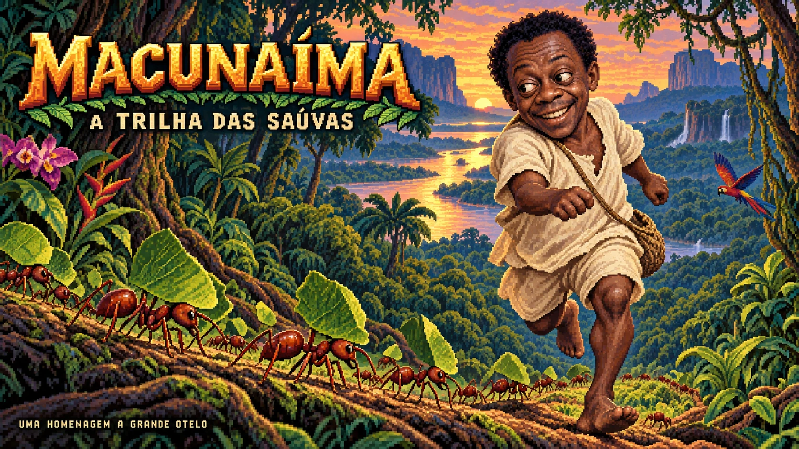

UMA AVENTURA MIÚDA NA IMENSIDÃO DA FLORESTA
A trilha das saúvas.
Uma folha. Mais uma formiga.
Até onde vai a sua trilha?
FOLHAS000
SAÚVAS01
RECORDE000
01 · CLAREIRA

◈ FLORESTA AMAZÔNICA 03° S · 60° O
SIGA A FOLHA. AUMENTE A TRILHA.↑←↓→ ou W A S D/ESPAÇO pausa
JOGUE COM UMA MÃO
Use o direcional ou
deslize no tabuleiro.
MANUAL DA FLORESTA
Miúda, mas não sozinha.
Folhas pelo caminho
Cada folha vale 10 pontos
e traz uma nova saúva.
Uma trilha viva
Não cruze seu próprio caminho.
Nem os limites da clareira.
A floresta tem companhia
Personagens de Macunaíma
aparecem a cada 3 folhas.